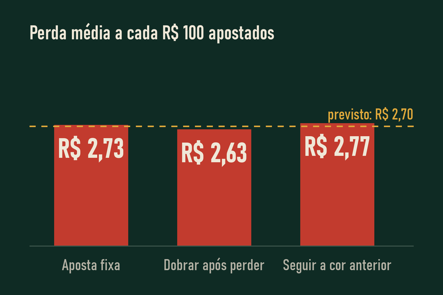

Em 1975, a psicóloga americana Ellen Langer mostrou que quem escolhia o próprio bilhete de loteria pedia muito mais dinheiro para revendê-lo do que quem tinha recebido um bilhete qualquer, mesmo o sorteio sendo exatamente o mesmo. Ela deu um nome a esse efeito:
Uma expectativa de sucesso pessoal maior do que a probabilidade objetiva justificaria.
Ellen J. Langer, “The illusion of control”, Journal of Personality and Social Psychology, 1975 (tradução livre)
As bets trabalham essa sensação o tempo todo: telas com estatísticas, “dicas” de influenciadores, botões para escolher o próprio palpite. Tudo isso faz a aposta parecer uma questão de habilidade. Na roleta, ela é só uma questão de tempo.
| Jogo | Casa | Empate | Fora | Soma das chances |
|---|---|---|---|---|
| Atlético do Vale × Unidos da Serra | 2,10 | 3,40 | 3,50 | 105% |
| Real Litoral × Operário Norte | 1,72 | 3,80 | 4,75 | 105% |
| Esporte Central × Ferroviário | 2,65 | 3,15 | 2,80 | 105% |
Times e jogos inventados. As cotações mudam sozinhas, como nas apostas ao vivo. Repare na última coluna: somando as chances que cada cotação sugere (1 dividido pela cotação), o total passa de 100%. Essa sobra é a margem da casa, e ela está em todo jogo, não importa em quem você aposte.
Mito e fato
-
Saiu vermelho cinco vezes seguidas, agora tem que sair preto.A roleta não lembra o que saiu antes. A chance de preto continua sendo 18 em 37. -
Se eu dobrar a aposta toda vez que perder, uma hora recupero tudo.Dobrar funciona até o dinheiro acabar ou a aposta bater no limite da mesa. Quando falha, falha de uma vez e leva tudo. -
Eu conheço futebol, então nas apostas esportivas tenho vantagem.As cotações já embutem a margem da casa. Conhecer o esporte ajuda a escolher, mas não elimina essa margem.

Três estratégias, uma noite
Uma partida simulada: três jogadores começam com R$ 1.000 na roleta e apostam R$ 10 no vermelho, cada um com a sua estratégia. Role a página para ver o saldo de cada um, rodada por rodada.
- Aposta fixa
- Dobrar depois de perder
- Seguir a cor anterior
A conta da vantagem da casa
Apostando R$ 1 no vermelho, você ganha R$ 1 em 18 das 37 casas e perde R$ 1 nas outras 19, contando o zero.
Resultado médio por rodada: 18/37 × (+1) + 19/37 × (−1) = −1/37, ou seja, −2,7% de tudo que você aposta.
Apostando num número, a casa paga 35 para 1. A conta fica 1/37 × (+35) + 36/37 × (−1) = −1/37. É a mesma vantagem, só que com resultados mais extremos.
O que as estratégias realmente mudam
Elas mudam a forma da perda, não o tamanho médio dela. Dobrar depois de perder produz muitas vitórias pequenas e algumas quebras enormes. Apostar num número produz longos períodos de perda e raras vitórias grandes. Seguir a cor anterior não muda nada.
No simulador, você pode testar cada uma e comparar o resultado com a perda esperada, que aparece ao lado do saldo.
Testar as estratégias no simulador
Voltar ao topo